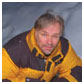
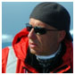
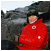
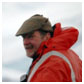
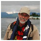
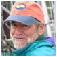
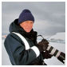
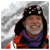
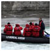
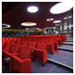

Your Tour Guides to the Arctic
Delivering a guide-to-passenger ratio of 1:12, we vigilantly select and hire our tour guides for their knowledge and credentials as leaders in their fields, whether as research scientists, wildlife photographers or habitat conservationists. A&K’s Arctic expedition team occupy a category all their own, delivering unrivaled expertise on the region’s history and wildlife as well as pledge to the triumph of your voyage, which they oversee down to the last detail.
Mats Forsberg — Expedition Leader
Mats first worked aboard the world-famous ‘Explorer’ in 1982 and has since conquered the seven seas, including Norway’s Svalbard Archipelago, Greenland and Antarctica. A naturalist and wildlife photographer from Sweden, in addition to leading A&K expedition cruises and Extreme Adventure Polar Bear Treks, Mats has also served as a key location consultant for BBC and other international media companies, devoting his life to sharing and preserving the beauty of the Arctic..
Marco Favero — Assistant Expedition Leader
Marco is affiliated with the University of Mar del Plata in Argentina. He is the current Chairperson of the Advisory Committee for the Agreement on the Conservation of Albatrosses and Petrels (ACAP). Marco has worked with Dr. Patricia Silva (see below) on researching ornithology and marine biology, as well as the ecology, conservation and study of relationships between the demography of seabirds and climate change. He and Patricia are also integrally involved in seabird conservation initiatives.
Jannie Cloete — Cruise Director
A native of South Africa, Jannie has travelled to all seven continents, working as cruise director and expedition leader for more than 28 years on ships ranging from a mega-liner with 2,500 passengers to a Russian icebreaker bound for the North Pole.
Patricia Silva — Lecturer on Ornithology
Patricia conducts research with Argentina’s University of Mar del Plata. She is the current editor of the IAATO Save the Albatross Campaign newsletter, focused on the conservation of albatross and petrel in fisheries of the Southern Ocean.
Bob Burton — Lecturer on Arctic History
After graduating from the University of Cambridge in 1963, Bob joined the British Antarctic Survey as a zoologist and meteorologist for two years, overwintering twice at remote Signy Island. He later turned his attention to the Arctic, taking part in numerous expeditions in northeast Greenland and Ellesmere Island as well as leading dozens of tours to Greenland and Svalbard. A lecturer on both polar regions since 1987, Bob has authored over 30 books and is the recipient of the Polar Medal for research.
Charley Wheatley — Lecturer on Marine Mammals
Charley is a marine biologist, oceanographer and research diver with extensive experience in tropical, temperate and polar waters. He teaches oceanography and environmental sciences in San Diego, California, and has worked as a marine naturalist and lecturer at Scripps Aquarium in La Jolla.
Dr. Ralph Eshelman — Lecturer on Geology
With a Ph.D. from the University of Michigan, Ralph is a specialist in polar exploration, military and maritime history, geology and vertebrate paleontology. Formerly a research associate for 30 years in the Department of Paleobiology at the National Museum of Natural History, Smithsonian Institution, Ralph has also served on plentiful expeditions to destinations around the world, including Norway, Svalbard, Iceland and Greenland.
Richard Harker — Photo enrichment coach
Richard has been a professional photographer for 20 years, specializing in underwater, wildlife and landscape photography. Richard’s works have appeared in more than a dozen books and magazines, and he is equally comfortable using a state-of-the-art digital SLR and 19th-century large-format field cameras. He joins ‘Le Boreal’ as a photographic expert to give travellers tips for capturing memories of their voyage.
Larry Hobbs — Lecturer on Marine Biology
A marine mammal biologist and lecturer for more than 35 years, Larry has served as director of the Marine Mammal Tagging Office for the U.S. Department of the Interior and the Department of Commerce and as principal research scientist at the National Marine Mammal Laboratory. In addition to over 20 seasons of leading expeditions in Antarctica, Larry has also led trips in Norway, Greenland and Iceland; the Amazon and Orinoco rivers; and in the South Pacific and Indian oceans.
A&K passengers experience a very different reality from merely being content to watch the world scroll past the rail of a cruise ship’s promenade deck. Our itineraries bring you into direct contact with the thrilling world around you while our expert lecturers and tour leaders provide you with extraordinary knowledge, insight and up-close encounters.
Shore Excursions
Following years of experience navigating Arctic waters, the A&K Arctic Expedition Team knows just where and when to position ‘Le Boreal’ for maximum access to wildlife and spectacular views. With the exception of days at sea, shore excursions are planned daily (weather conditions permitting). Your expedition leader, who reviews safety and conditions on shore, precedes each excursion with a briefing, all before you head to shore with a group of no more than 12 passengers on board your Zodiac – a sturdy, motorized rubber boat designed by Jacques Cousteau for safe operations in rough and shallow waters.
On shore, activities vary depending on terrain, but expect your expert naturalist tour guide to explain and demystify every sight you see. On the Svalbard Islands, join bear guardians in the search for polar bears in their natural habitat, visit an old hunting hut (Bjorneborg) and explore a 17th-century Dutch whaling station. In Grundarfjördur, walk one of Iceland’s first villages before taking in views of the extinct Snaefellsjokull volcano, site of Jules Verne’s fictional Journey to the Center of the Earth.
On-Board Activities
A&K Arctic tours take full advantage of days at sea to shed light on every aspect of your journey – the quintessential sights as well as the elements you probably never considered. Thoughtful lectures cover topics ranging from the practical (how to master your digital camera) to the enriching (geological features of the Svalbard) and personal (a firsthand account).
Our expedition staff is also constantly on the lookout for marine life from the deck, and impromptu whale and seabird sightings are enhanced by the “play-by-play” of expert tour guides.